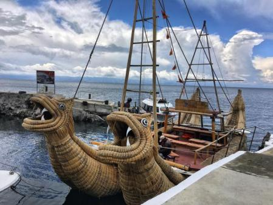

Unión entre lo ancestral y moderna
Demuestra que la sabiduría de los pueblos originarios sigue siendo relevante para comprender nuestro pasado y enriquecer la investigación actual.

La colaboración entre muy culturas distintas
Representada por la relación entre Thor Heyerdahl y Paulino Esteban, enseña que el respeto mutuo y la cooperación son fundamentales para superar barreras y ampliar el conocimiento humano

El legado de ambos personajes trasciende su época
Inspirando a las generaciones actuales a valorar las raíces culturales y a promover proyectos educativos, científicos y culturales basados en la cooperación y el entendimiento entre los pueblos.